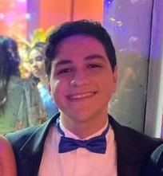

Currículo

Nome: Luiz Augusto Carvalho Palla
Email:lluizpalla@gmail.com
Cargo Pretendido: Programador
Resumo de experiências:
Programador com experiência em desenvolvimento web e mobile, utilizando linguagens como JavaScript, Python e Dart.
Atuou em projetos com foco em usabilidade, desempenho e integração com APIs. Familiaridade com metodologias ágeis e versionamento de código.
Formação Acadêmica: Sistemas De informação
Experiências Profissionais:
Freelancer – Projetos Independentes (2020–Presente)
Estagiário de Desenvolvimento Mobile – Startup ABC (2021–2022)
Desenvolvedor Full Stack – Empresa XYZ (2022–2024)
linguagens: Português(BR), Inglês, Espanhol, Japônes, Coreano, Italiano, Francês, alemão, Russo e árabe
Certificações:
Certificado Profissional de Suporte em TI – Google (Coursera)
CS50: Introduction to Computer Science – Harvard (edX)
AWS Certified Developer – Associate
Microsoft Certified: Azure Fundamentals
Scrum Foundation Professional Certificate (SFPC) – CertiProf
Oracle Certified Associate Java SE Programmer
Certificado de Desenvolvimento Web Full Stack – Digital Innovation One (DIO)
Flutter & Dart – The Complete Guide (Udemy)